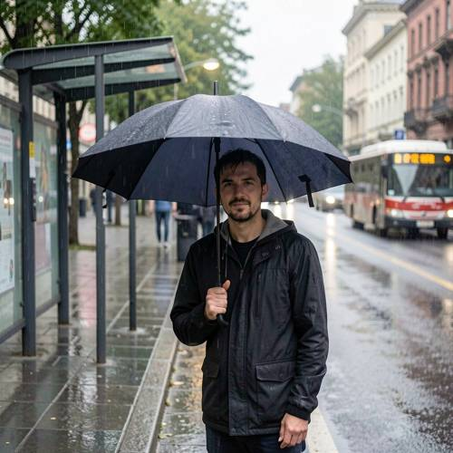
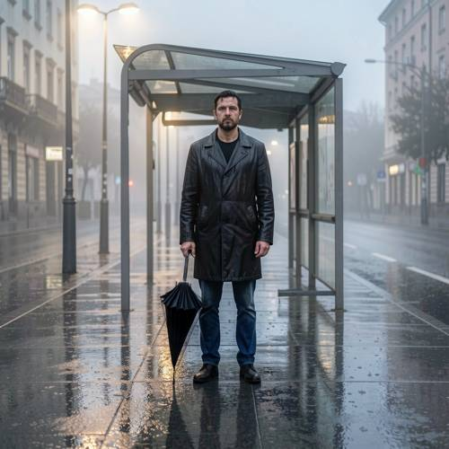
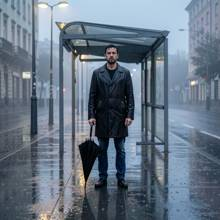
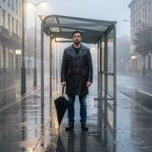
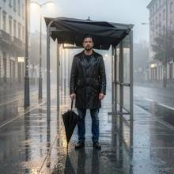
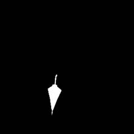

Logical Reasoning — On the street after the rain, a man stood alone in front of the bus st
On the street after the rain, a man stood alone in front of the bus stop. The umbrella in his hand was dry, but his shoulders were wet.

Direct — one call, no iteration

Continuum — Kimi K3 + FLUX.2-klein-9B
Judge — Direct
FAILLogical Reasoning — The prompt requires a logical contradiction: the umbrella in the man's hand is dry, but his shoulders are wet. In the image, the man is holding an open black umbrella that is visibly wet, with water droplets covering its surface. The shoulders of his black jacket also appear wet. Since the umbrella is not dry, the specific logical requirement of the prompt is not fulfilled.
PASSEntity Layout - Three-Dimensional Space — The image shows a man standing on a wet sidewalk. To his left and slightly behind him is a structure with a roof and glass panels, which is a bus stop shelter. The man's position is adjacent to and forward of this structure, which aligns with the description of a man standing in front of the bus stop.
Judge — Continuum
PASSLogical Reasoning — The man is holding a closed black umbrella that appears dry, as it lacks any visible moisture or sheen from water. In contrast, the shoulders and sleeves of his black coat have a distinct wet appearance, with a noticeable sheen and darker patches indicating they are soaked with water.
PASSEntity Layout - Three-Dimensional Space — A man is positioned in the center of the frame, standing on a wet sidewalk. Directly behind him is a bus stop shelter, establishing that he is standing in front of it.
What the agent did
Thinking
We need need generate image for prompt. Need likely image-generation benchmark. Must use flux2-klein. Need inspect, edits. Need first generate. Need perhaps interpret as scene with man alone bus stop, wet street after rain, holding dry umbrella closed? His shoulders wet despite umbrella dry. We need visual clear. Prompt perhaps visual detail. Let's generate maybe 1024 square. Need no seed. Let's create cinematic photorealistic.
Step 1 — `generate_image`
{
"model": "flux2-klein",
"prompt": "A cinematic photorealistic street scene immediately after rain: one man stands alone directly in front of a bus stop, centered in the frame. The wet pavement reflects the bus stop shelter and gray streetlights. He holds a dry, closed black umbrella in one hand, visibly unused, while his coat shoulders are soaked dark with water. His face looks quiet and weary. Overcast evening light, soft mist, muted blue-gray palette, realistic urban background, no other people, natural composition, detailed wet fabric and reflective ground.",
"width": 1024,
"height": 1024
}
Result img_0

Thinking
Image looks good but issue umbrella appears wet? Prompt requires dry umbrella, wet shoulders. Coat entire wet, shoulders wet. Umbrella maybe visibly wet due rain drops, not dry. Also current scene appears still raining heavily, not after rain. We need maybe edit to make rain stop / mist but no falling rain, dry umbrella. Need inspect crop on umbrella and shoulders maybe. Since image quite good. Need inspect region. Could crop upper torso / umbrella. Use inspect_region.
Umbrella mostly dark, maybe has highlights from wet. Scene definitely rain streaks. User said after rain; we should edit remove active rainfall streaks while preserving wet pavement and perhaps make umbrella matte dry. Need use edit_image. Prompt targeted only: "Remove visible falling rain streaks throughout the scene, leaving wet pavement..." Also "make black umbrella fabric matte and completely dry, with no raindrops." Should we split due multi-entity changes? Yes two distinct edits, but can perhaps one? Editing discipline says split into ordered single-entity edits. Let's first remove active rain streaks and mist maybe. Use flux2-klein, no steps/guidance.
Step 6 — `edit_image`
{
"image": "img_0",
"model": "flux2-klein",
"prompt": "Remove all visible falling-rain streaks from the air while preserving the wet pavement, reflective street, misty overcast atmosphere, and damp appearance of the surroundings."
}
Result img_5

Thinking
Looks good; no rain streaks visible. Umbrella still shiny maybe but could be damp from reflected light. Need make dry maybe matte. Current shoulder wet (leather glossy) perhaps entire coat shiny. Need "make closed umbrella matte black and completely dry, while shoulders stay visibly soaked." Single edit.
Step 7 — `edit_image`
{
"image": "img_5",
"model": "flux2-klein",
"prompt": "Make the closed umbrella fabric matte black and visibly dry, with no raindrops or glossy water highlights. Keep the man's shoulders dark and visibly soaked with water."
}
Result img_6

Thinking
Oops added weird duplicate open umbrella attached to shelter! Bad. Need mark img5 as best (good). Then perhaps edit img5 more targeted maybe only umbrella without affecting shelter. But first mark img5 now as good result.
Step 8 — `mark_best`
{
"image": "img_5",
"reason": "Best match so far: the rain has stopped, pavement is wet, the man is alone at the bus stop, and his closed umbrella contrasts with soaked shoulders. A later umbrella edit distorted the shelter."
}
Thinking
Need perhaps current img5 enough. We need maybe inspect it for umbrella dryness. Already image full. The umbrella is dark and shiny. But "umbrella was dry" concept perhaps hard to visually show; dry could be matte. Current umbrella appears damp due lighting. We could try inpaint localized umbrella. Need exact preservation and region. Segment umbrella, then inpaint with matte dry fabric. But inpaint can replace umbrella shape maybe. Or edit with more precise "replace only the hand-held closed umbrella with a matte black completely dry umbrella; do not alter bus stop." Previous edit hallucinated open umbrella because prompt said umbrella, perhaps model duplicated. Inpaint might be better. Need segment closed umbrella. Use segment text "the closed black umbrella held in the man's hand" with negatives maybe shelter roof? Let's do segment on img5.
Step 9 — `segment`
{
"image": "img_5",
"description": "the closed black umbrella held in the man's hand",
"negative_descriptions": [
"the bus stop shelter roof",
"the man's hand",
"the black coat"
],
"threshold": 0.3,
"mask_threshold": 0.5
}
Result img_7

Thinking
Great mask. Inpaint only umbrella with "closed black umbrella made of matte dry fabric..." Could preserve outside. Use FLUX Fill default steps/guidance per rule. Need no seed. This is localized.
Step 10 — `inpaint_image`
{
"image": "img_5",
"mask": "img_7",
"prompt": "a closed black umbrella made of matte dry fabric, with no water droplets and no glossy wet patches, held naturally in the man's hand"
}
Result img_8
Thinking
Looks good. Umbrella still reflective due normal fabric, but no obvious water droplets. It is perhaps closed. Man alone. Rain stopped. Wet shoulders—coat all wet, but shoulders dark. Good. Need inspect crop maybe umbrella and shoulders, at source resolution. Let's inspect.
Still top. It's okay. Umbrella maybe close. img8 is better than img5 due no shelter distortion. Need mark img8 as best. Then decide stop. But perhaps man "stood alone in front of bus stop": yes. Umbrella in his hand dry: yes. Shoulders wet: wet coat broad. Rain after: no rain streaks, wet pavement. We should stop. Mark.
Step 14 — `mark_best`
{
"image": "img_8",
"reason": "Final result matches all elements: the rain has stopped, wet street reflections remain, the man stands alone in front of the bus stop, his closed umbrella appears dry, and his shoulders are visibly soaked."
}
Thinking
Need final concise mention completed. Since marked image returned automatically maybe final should describe.
Model
Created the scene: a solitary man at a rain-soaked bus stop after the rain, holding a dry closed umbrella while his shoulders remain visibly wet.